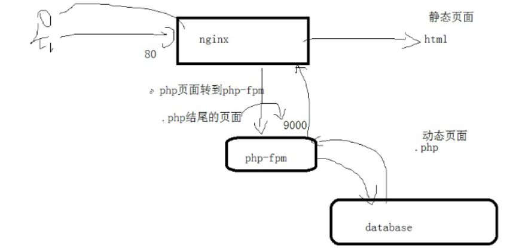
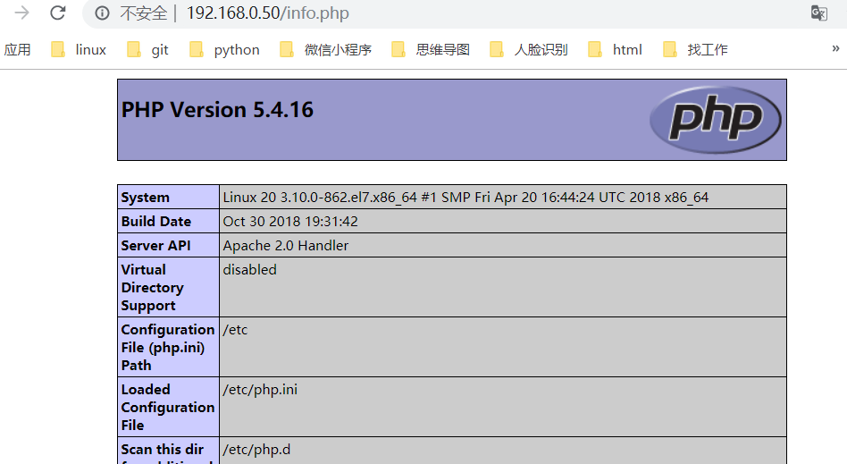
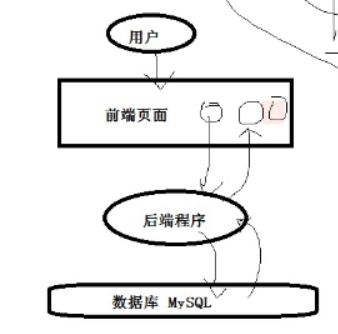

WEB
流程：
1.服务是什么？为什么要使用？
2.用在哪里？
3.如何搭建使用？
安装
4.排错–》日志
5.熟悉服务的配置文件
6.写出部署脚本–》一键部署
LNMP
含义
- linux nginx MySQL php/python/perl
Nginx
- Nginx (engine x) 是一个高性能的HTTP和反向代理web服务器，同时也提供了IMAP/POP3/SMTP服务。Nginx是由伊戈尔·赛索耶夫为俄罗斯访问量第二的Rambler.ru站点（俄文：Рамблер）开发的，第一个公开版本0.1.0发布于2004年10月4日。
安装
编译安装nginx
1
2
3
4
5
6
7
8
9
10
11
12
13
14
15
16
17
18
19
20
21
22
23
24
25[root@LAMP LNMP]# wget http://nginx.org/download/nginx-1.17.1.tar.gz
[root@LAMP nginx-1.17.1]#yum install gcc gcc-c++ openssl openssl-devel cyrus-sasl-md5
[root@LAMP nginx-1.17.1]# yum install pcre pcre-devel zlib zlib-devel
[root@LAMP LNMP]# tar xf nginx-1.17.1.tar.gz
[root@LAMP LNMP]# ls
lnmp1.6 lnmp1.6.tar.gz nginx-1.17.1 nginx-1.17.1.tar.gz
[root@LAMP LNMP]# cd nginx-1.17.1
[root@LAMP nginx-1.17.1]# ls
auto CHANGES CHANGES.ru conf configure contrib html LICENSE man README src
[root@LAMP nginx-1.17.1]# ./configure --prefix=/usr/local/nginx --with-http_ssl_module
[root@LAMP nginx-1.17.1]#make
[root@LAMP nginx-1.17.1]#make install
[root@LAMP sbin]# cd /usr/local/nginx/sbin/
[root@LAMP sbin]# pwd
/usr/local/nginx/sbin
[root@LAMP sbin]# ./nginx 启动
[root@LAMP sbin]# lsof -i:80
COMMAND PID USER FD TYPE DEVICE SIZE/OFF NODE NAME
nginx 20709 root 6u IPv4 195779 0t0 TCP *:http (LISTEN)
nginx 20710 nobody 6u IPv4 195779 0t0 TCP *:http (LISTEN)
[root@LAMP sbin]#
[root@LAMP sbin]# ./nginx -s stop 停止
安装PHP-FPM
首先安装编译安装的扩展包
1
yum install gcc gcc-c++ libxml2 libxml2-devel autoconf libjpeg libjpeg-devel libpng libpng-devel freetype freetype-devel zlib zlib-devel glibc glibc-devel glib2 glib2-devel bzip2 bzip2-devel curl-devel -y
编译安装PHP
1
2
3
4
5
6[root@LAMP LNMP]# tar xf php-7.2.20.tar.gz
[root@LAMP LNMP]# cd php-7.2.20
[root@LAMP php-7.2.20]# ls
这些配置是对php的最佳配置
[root@LAMP php-7.2.20]#./configure --prefix=/usr/local/php7.2 --enable-fpm --enable-mbstring --with-libxml-dir=/usr --enable-soap --with-curl --with-zlib --with-gd --with-pdo-sqlite --with-pdo-mysql --with-mysqli --with-mysql-sock --enable-mysqlnd --disable-rpath --enable-inline-optimization --with-bz2 --with-zlib --enable-sockets --enable-sysvsem --enable-sysvshm --enable-pcntl --enable-mbregex --enable-exif --enable-bcmath --with-mhash --enable-zip --with-pcre-regex --enable-ftp --with-kerberos --with-xmlrpc --with-fpm-user=www --disable-fileinfo编译安装：
1
[root@LAMP php-7.2.20]# make && make install
在这里先别着急启动PHP-FPM，PHP要和Nginx配置文件相关关联起来才能实现解析php 文件
- 
进入PHP的安装目录拷贝一份配置文件
1
2
3
4
5
6
7
8
9
10
11
12
13cd /usr/local/php7.2/etc
cp php-fpm.conf.default php-fpm.conf
vim php-fpm.conf
编辑内容如下：
pid = run/php-fpm.pid 去掉前面的#
根据 php-fpm.conf 最后的一行的配置，进入加载的配置文件
cd /usr/local/php7.2/etc/php-fpm.d
cp www.conf.default www.conf
vim www.conf
保证系统监听的的端口是否冲突
listen = 127.0.0.1:9000 默认不需要修改
在这些基础设置都设置好之后，启动PHP-FPM
1
/usr/local/php7.2/sbin/php-fpm
1
ps -ef | grep php
可以看到不仅有root进程还有新增的www 用户组的进程,这样的PHP就启动成功了！！！
接下来就是来配置nginx 解析PHP文件配置了。
- 要保证和PHP配置的用户名和用户组是统一的。
1
2
[root@LAMP html]# useradd -r -s /sbin/nologin www
[root@LAMP html]#
- 进入Nginx的配置文件目录，编辑修改一下行
1
2
user www;
worker_processes 1;
- 下面的配置是nginx对php页面的支持，只要访问的页面是以.php结尾的就转发给127.0.0.1:9000端口去解析
location ~ \.php$ {
root html;
fastcgi_pass 127.0.0.1:9000;
fastcgi_index index.php;
fastcgi_param SCRIPT_FILENAME /scripts$fastcgi_script_name;
include fastcgi_params;
}配置的路径地址一定是绝对路径地址
同样启动Nginx也需要有跟PHP-FPM 一样的www 用户组
修改完配置之后，重启Nginx 服务器1
2
3/usr/local/nginx/sbin/nginx -s reload
查看nginx 是否已经启动了更改的配置
ps -ef | grep nginx根据域名或者对应的IP地址执行PHP文件。执行结果成功如下图,可以成功解析PHP文件
访问一个info.php1
2
3
4
5
6
7
8
9
10
11[root@LAMP html]# cat info.php
<p> xudejian
<p> huruihao
<?php
phpinfo();
?>
[root@LAMP html]#
[root@LAMP html]# lsof -i:3306
COMMAND PID USER FD TYPE DEVICE SIZE/OFF NODE NAME
mysqld 17568 mysql 13u IPv4 184704 0t0 TCP *:mysql (LISTEN)
[root@LAMP html]#
nginx和apache的差异
安装
yum 安装可以使用epel源或者官方源
1
2
3
4
5
6
7
8
9
10
11
12
13
14
15#安装nginx
[root@sanchuang ~]# yum install epel-release -y
[root@sanchuang ~]# cd /etc/yum.repos.d/
[root@sanchuang yum.repos.d]# ls
CentOS-Base.repo CentOS-Debuginfo.repo CentOS-Media.repo CentOS-Vault.repo epel-testing.repo
CentOS-CR.repo CentOS-fasttrack.repo CentOS-Sources.repo epel.repo
[root@sanchuang yum.repos.d]# vim nginx.repo
[nginx-stable]
name=nginx stable repo
baseurl=http://nginx.org/packages/centos/$releasever/$basearch/
gpgcheck=1pwd
enabled=1
gpgkey=https://nginx.org/keys/nginx_signing.key
[root@sanchuang yum.repos.d]# yum install nginx -y1
2
3
4
5
6
7
8
9
10#安装apache
[root@sanchuang ~]# yum install httpd -y
[root@sanchuang ~]# cd /etc/httpd/ 存放配置文件的路径
[root@sanchuang httpd]# ls
conf conf.d conf.modules.d logs modules run
[root@sanchuang httpd]#
[root@sanchuang httpd]# cd conf
[root@sanchuang conf]# ls
httpd.conf magic
[root@sanchuang conf]#
配置文件
- 配置文件的路径： serverroot
nginx --》/etc/nginx/nginx.conf httpd -->/etc/httpd/conf/httpd.conf - 存放网页的路径： documentroot
httpd --》DocumentRoot "/var/www/html" nginx --》root /usr/share/nginx/html;
- 配置文件的路径： serverroot
httpd.conf
1
2
3
4
5
6
7
8
9
10
11
12
13
14
15
16
17
18
19
20
21
22
23
24
25
26
27
28
29
30
31
32
33
34
35
36
37
38
39
40
41
42
43
44
45
46
47
48
49
50
51
52
53
54
55
56
57
58
59
60
61
62
63[root@sanchuang conf]#
[root@sanchuang conf]# cat httpd.conf |egrep -v "^#|^$|\s+#"
ServerRoot "/etc/httpd" --》安装的目录
Listen 8080 --》监听的端口号
Include conf.modules.d/*.conf --》包括其他的配置文件
User apache 启动进程使用的用户
Group apache 启动进程使用的组
ServerAdmin root@localhost 管理员的邮箱
<Directory />
AllowOverride none
Require all denied
</Directory>
DocumentRoot "/var/www/html" --》存放网页目录
<Directory "/var/www">
AllowOverride None
Require all granted
</Directory>
<Directory "/var/www/html">
Options Indexes FollowSymLinks
AllowOverride None
Require all granted
</Directory>
<IfModule dir_module>
DirectoryIndex index.html --》规定网站的首页
DirectoryIndex shouye.html index.html index.php 指定多个首页文件，按从左到右的顺序，去查询
</IfModule>
<Files ".ht*">
Require all denied
</Files>
ErrorLog "logs/error_log" 错误日志
LogLevel warn
<IfModule log_config_module>
LogFormat "%h %l %u %t \"%r\" %>s %b \"%{Referer}i\" \"%{User-Agent}i\"" combined
LogFormat "%h %l %u %t \"%r\" %>s %b" common
<IfModule logio_module>
LogFormat "%h %l %u %t \"%r\" %>s %b \"%{Referer}i\" \"%{User-Agent}i\" %I %O" combinedio
</IfModule>
CustomLog "logs/access_log" combined 自定义格式
</IfModule>
<IfModule alias_module>
ScriptAlias /cgi-bin/ "/var/www/cgi-bin/"
Alias /chenxianle "/var/www/html/chenxianle" 访问的url 192.168.0.241:8080/chenxianle 会自动访问/var/www/html/chenxianle目录里的网页
</IfModule>
<Directory "/var/www/cgi-bin">
AllowOverride None
Options None
Require all granted
</Directory>
<IfModule mime_module>
TypesConfig /etc/mime.types
AddType application/x-compress .Z
AddType application/x-gzip .gz .tgz
AddType text/html .shtml
AddOutputFilter INCLUDES .shtml
</IfModule>
AddDefaultCharset UTF-8
<IfModule mime_magic_module>
MIMEMagicFile conf/magic
</IfModule>
EnableSendfile on
IncludeOptional conf.d/*.conf
[root@sanchuang conf]#
nginx.conf
核心特性与多处理模块(MPM)
prefork:预先产生进程，等着客户来访问 –》apache
prefork –》预先产生进程，等着客户来访问 –》apache
StartServers 200 启动多少进程数
MinSpareServers 最少备用的进程数
MaxSpareServers 20 最多备用的进程数
MaxRequestWorkers 同时最多可以有多少请求数
MaxConnectionsPerChild 一个进程可以处理多少次的请求
ServerLimit 256 最多支持256个访问量优点是稳定
缺点：消耗资源（内存、cpu）[root@sanchuang conf.modules.d]# vim 00-mpm.conf
LoadModule mpm_prefork_module modules/mod_mpm_prefork.so
StartServers 50
ServerLimit 256
MaxSpareServers 10worker：多进程和多线程混合的模式
multi-threaded multi-process web server
ServerLimit 16
StartServers 2
MaxRequestWorkers 150
MinSpareThreads 25
MaxSpareThreads 75
ThreadsPerChild 25event ：纯线程处理模式 –》nginx
event MPM: A variant of the worker MPM with the goal of consuming
threads only for connections with active processing
LAMP
含义
- linux apache（httpd） MySQL（mariadb） php/python/perl
yum安装LAMP
[root@LAMP ~]# cat /etc/redhat-release
CentOS Linux release 7.6.1810 (Core)安装Apache
安装apache
1
[root@nmserver-7 ~]# yum install httpd httpd-devel
启动apache服务
1
[root@nmserver-7 ~]# systemctl start httpd
设置httpd服务开机启动
1
2[root@nmserver-7 ~]# systemctl enable httpd
Created symlink from /etc/systemd/system/multi-user.target.wants/httpd.service to /usr/lib/systemd/system/httpd.service.查看服务状态
1
2
3
4
5
6
7
8
9
10
11
12
13
14
15
16
17
18
19
20
21
22
23
24
25
26
27
28
29
30
31
32
33
34
35
36
37
38
39[root@LAMP ~]# lsof -i:80
COMMAND PID USER FD TYPE DEVICE SIZE/OFF NODE NAME
httpd 16964 root 4u IPv6 182613 0t0 TCP *:http (LISTEN)
httpd 16965 apache 4u IPv6 182613 0t0 TCP *:http (LISTEN)
httpd 16966 apache 4u IPv6 182613 0t0 TCP *:http (LISTEN)
httpd 16967 apache 4u IPv6 182613 0t0 TCP *:http (LISTEN)
httpd 16968 apache 4u IPv6 182613 0t0 TCP *:http (LISTEN)
httpd 16969 apache 4u IPv6 182613 0t0 TCP *:http (LISTEN)
[root@LAMP ~]#
[root@LAMP ~]# ps aux|grep httpd
root 16964 0.0 0.5 230408 5212 ? Ss 15:07 0:00 /usr/sbin/httpd -DFOREGROUND
apache 16965 0.0 0.3 230408 3024 ? S 15:07 0:00 /usr/sbin/httpd -DFOREGROUND
apache 16966 0.0 0.3 230408 3024 ? S 15:07 0:00 /usr/sbin/httpd -DFOREGROUND
apache 16967 0.0 0.3 230408 3024 ? S 15:07 0:00 /usr/sbin/httpd -DFOREGROUND
apache 16968 0.0 0.3 230408 3024 ? S 15:07 0:00 /usr/sbin/httpd -DFOREGROUND
apache 16969 0.0 0.3 230408 3024 ? S 15:07 0:00 /usr/sbin/httpd -DFOREGROUND
[root@LAMP ~]#
[root@LAMP ~]# service httpd status
Redirecting to /bin/systemctl status httpd.service
● httpd.service - The Apache HTTP Server
Loaded: loaded (/usr/lib/systemd/system/httpd.service; enabled; vendor preset: disabled)
Active: active (running) since 一 2019-07-15 15:07:24 CST; 1min 58s ago
Docs: man:httpd(8)
man:apachectl(8)
Main PID: 16964 (httpd)
Status: "Total requests: 0; Current requests/sec: 0; Current traffic: 0 B/sec"
CGroup: /system.slice/httpd.service
├─16964 /usr/sbin/httpd -DFOREGROUND
├─16965 /usr/sbin/httpd -DFOREGROUND
├─16966 /usr/sbin/httpd -DFOREGROUND
├─16967 /usr/sbin/httpd -DFOREGROUND
├─16968 /usr/sbin/httpd -DFOREGROUND
└─16969 /usr/sbin/httpd -DFOREGROUND
7月 15 15:07:23 LAMP systemd[1]: Starting The Apache HTTP Server...
7月 15 15:07:23 LAMP httpd[16964]: AH00558: httpd: Could not reliably determine ...age
7月 15 15:07:24 LAMP systemd[1]: Started The Apache HTTP Server.
Hint: Some lines were ellipsized, use -l to show in full.
[root@LAMP ~]#查服务器IP
1
2
3
4
5
6
7
8
9
10
11
12
13
14[root@LAMP ~]# ip add
1: lo: <LOOPBACK,UP,LOWER_UP> mtu 65536 qdisc noqueue state UNKNOWN group default qlen 1000
link/loopback 00:00:00:00:00:00 brd 00:00:00:00:00:00
inet 127.0.0.1/8 scope host lo
valid_lft forever preferred_lft forever
inet6 ::1/128 scope host
valid_lft forever preferred_lft forever
2: ens33: <BROADCAST,MULTICAST,UP,LOWER_UP> mtu 1500 qdisc pfifo_fast state UP group default qlen 1000
link/ether 00:0c:29:15:32:2f brd ff:ff:ff:ff:ff:ff
inet 192.168.1.126/24 brd 192.168.1.255 scope global noprefixroute dynamic ens33
valid_lft 4834sec preferred_lft 4834sec
inet6 fe80::7760:f24b:f034:56b0/64 scope link noprefixroute
valid_lft forever preferred_lft forever
[root@LAMP ~]#浏览器登陆
访问ip地址
安装MySQL
安装mysql
1
2
3
4
5
6
7
8[root@nmserver-7 ~]# yum install mariadb mariadb-server mariadb-libs mariadb-devel
root@nmserver-7 ~]# rpm -qa |grep maria
mariadb-libs-5.5.52-1.el7.i686
mariadb-5.5.52-1.el7.i686
mariadb-server-5.5.52-1.el7.i686
mariadb-devel-5.5.52-1.el7.i686开启mysql服务，并设置开机启动，检查mysql状态
1
2
3
4
5
6
7
8
9
10
11
12
13
14
15
16
17
18
19
20
21
22
23
24
25
26
27
28
29
30
31
32
33
34
35
36
37
38
39[root@nmserver-7 ~]# systemctl start mariadb
[root@nmserver-7 ~]# systemctl enable mariadb
- - - [root@LAMP ~]# lsof -i:3306
COMMAND PID USER FD TYPE DEVICE SIZE/OFF NODE NAME
mysqld 17568 mysql 13u IPv4 184704 0t0 TCP *:mysql (LISTEN)
[root@LAMP ~]#
[root@LAMP ~]# systemctl status mariadb
● mariadb.service - MariaDB database server
Loaded: loaded (/usr/lib/systemd/system/mariadb.service; enabled; vendor preset: disabled)
Active: active (running) since 一 2019-07-15 15:15:44 CST; 50s ago
Main PID: 17405 (mysqld_safe)
CGroup: /system.slice/mariadb.service
├─17405 /bin/sh /usr/bin/mysqld_safe --basedir=/usr
└─17568 /usr/libexec/mysqld --basedir=/usr --datadir=/var/lib/mysql --plu...
7月 15 15:15:42 LAMP systemd[1]: Stopped MariaDB database server.
7月 15 15:15:42 LAMP systemd[1]: Starting MariaDB database server...
7月 15 15:15:42 LAMP mariadb-prepare-db-dir[17375]: Database MariaDB is probably i....
7月 15 15:15:42 LAMP mariadb-prepare-db-dir[17375]: If this is not the case, make ....
7月 15 15:15:42 LAMP mysqld_safe[17405]: 190715 15:15:42 mysqld_safe Logging to '...'.
7月 15 15:15:42 LAMP mysqld_safe[17405]: 190715 15:15:42 mysqld_safe Starting mys...ql
7月 15 15:15:44 LAMP systemd[1]: Started MariaDB database server.
Hint: Some lines were ellipsized, use -l to show in full.
[root@LAMP ~]#
[root@LAMP ~]# mysql -uroot -p
MariaDB [(none)]> set password = password('sanchuang1234#');
Query OK, 0 rows affected (0.00 sec)
MariaDB [(none)]>
[root@LAMP ~]# mysql -uroot -p'sanchuang1234#'
Welcome to the MariaDB monitor. Commands end with ; or \g.
Your MariaDB connection id is 4
Server version: 5.5.60-MariaDB MariaDB Server
Copyright (c) 2000, 2018, Oracle, MariaDB Corporation Ab and others.
Type 'help;' or '\h' for help. Type '\c' to clear the current input statement.
MariaDB [(none)]>
安装PHP
安装php
1
2
3
4
5
6
7[root@nmserver-7 ~]# yum -y install php
[root@nmserver-7 ~]# rpm -ql php
/etc/httpd/conf.d/php.conf
/etc/httpd/conf.modules.d/10-php.conf
/usr/lib/httpd/modules/libphp5.so
/usr/share/httpd/icons/php.gif
/var/lib/php/session将php与mysql关联起来
1
2
3
4
5
6
7
8
9复制代码
[root@nmserver-7 ~]# yum install php-mysql
[root@nmserver-7 ~]# rpm -ql php-mysql
/etc/php.d/mysql.ini
/etc/php.d/mysqli.ini
/etc/php.d/pdo_mysql.ini
/usr/lib/php/modules/mysql.so
/usr/lib/php/modules/mysqli.so
/usr/lib/php/modules/pdo_mysql.so安装常用PHP模块
1
[root@nmserver-7 ~]# yum install -y php-gd php-ldap php-odbc php-pear php-xml php-xmlrpc php-mbstring php-snmp php-soap curl curl-devel php-bcmath
3.4 测试PHP
1
2
3
4
5
6
7
8
9
10
11
12
13
14
15
16
17
18
19复制代码
[root@nmserver-7 ~]# cd /var/www/html/
[root@nmserver-7 html]# ls
[root@nmserver-7 html]# pwd
/var/www/html
[root@nmserver-7 html]# vi info.php
<?php
phpinfo();
?>
~
~
~
~
~
~
~
~
:wq重启apache服务器
1
[root@nmserver-7 html]# systemctl restart http
测试PHP
在自己电脑浏览器输入 192.168.1.126/info.php，你可以看到已经安装的模块；

问题
为什么企业非常喜欢使用LAMP /LNMP?
答案：因为免费并且开源—》成本低廉–》吸引人的地方
apache和nginx的差异？
1.安装、软件名字 apache的提供服务的软件包名叫httpd
2.市场上的占有率 apache比nginx多 apache早 ，nginx后起之秀
3.工作原理 apache采用进程，nginx采用线程
4.软件功能和大小 apache功能多，代码多 轻量级的web服务器软件（nginx） 重量级（apache）
5.讲讲配置项的差异 6.对PHP支持的差异
apache是httpd这个程序利用一个libphp5.so的库文件来对php页面进行解析 –》自己调用libphp5.so库，自己完成
nginx是通过访问9000端口，利用php-fpm程序来进行php页面的解析 –》将php解析功能外包给php-fpm
java开发环境？
oracle —》sun
php、python由社区维护
其他
搭建一个网站：
1.apache –》8080 —》www.dinglang.com
2.nginx –》80 —>www.jack.com/etc/hosts
C:\Windows\System32\drivers\etc\hosts
apache和nginx都是对静态页面的支持
- apache如何支持php写的程序
- nginx如何知道python写的程序
动静分离：
静态页面---》nginx 动态页面 --》php/python- 通过url来实现识别
动态页面

静态页面和动态页面的区别？
huhai.py
huhai.php
huhai.js- 是否有后端程序去数据库里读写数据，数据的变化
我如何验证？
模拟同时1000人去访问
压力测试
服务器的瓶颈在哪里？
资源的角度：cpu、内存、网络带宽、磁盘IOApache的测试软件
ab
1
2
3
4
5
6
7
8
9
10
11
12
13
14
15
16
17[root@sanchuang ~]# ab -c 10000 -n 10000 http://192.168.0.241/dinglang/index.html
This is ApacheBench, Version 2.3 <$Revision: 1430300 $>
Copyright 1996 Adam Twiss, Zeus Technology Ltd, http://www.zeustech.net/
Licensed to The Apache Software Foundation, http://www.apache.org/
Benchmarking 192.168.0.241 (be patient)
socket: Too many open files (24)
[root@sanchuang ~]#
[root@sanchuang ~]# ulimit -a
core file size (blocks, -c) 0
data seg size (kbytes, -d) unlimited
scheduling priority (-e) 0
file size (blocks, -f) unlimited
pending signals (-i) 7221
max locked memory (kbytes, -l) 64
max memory size (kbytes, -m) unlimited
open files (-n) 1024 默认内核允许一个进程最多可以打开1024个文件
临时修改内核允许的一个进程可以打开多少文件数量的限制
默认内核允许一个进程最多可以打开1024个文件
1
2
3
4
5
6
7
8
9
10
11
12
13
14
15
16
17
18
19[root@sanchuang ~]# ulimit -n 100000 临时修改内核允许的一个进程可以打开多少文件数量的限制
[root@sanchuang ~]# ulimit -a
core file size (blocks, -c) 0
data seg size (kbytes, -d) unlimited
scheduling priority (-e) 0
file size (blocks, -f) unlimited
pending signals (-i) 7221
max locked memory (kbytes, -l) 64
max memory size (kbytes, -m) unlimited
open files (-n) 100000
pipe size (512 bytes, -p) 8
POSIX message queues (bytes, -q) 819200
real-time priority (-r) 0
stack size (kbytes, -s) 8192
cpu time (seconds, -t) unlimited
max user processes (-u) 7221
virtual memory (kbytes, -v) unlimited
file locks (-x) unlimited
[root@sanchuang ~]#[root@sanchuang nginx]# cat access.log |awk ‘{print $1}’|sort |uniq -c
32 192.168.0.102 38 192.168.0.104 50 192.168.0.126 17 192.168.0.13 4 192.168.0.1408051 192.168.0.152
8 192.168.0.155 102 192.168.0.2083577 192.168.0.241
4 192.168.0.35 72 192.168.0.41 5 192.168.0.50 6 192.168.0.61[root@sanchuang nginx]#